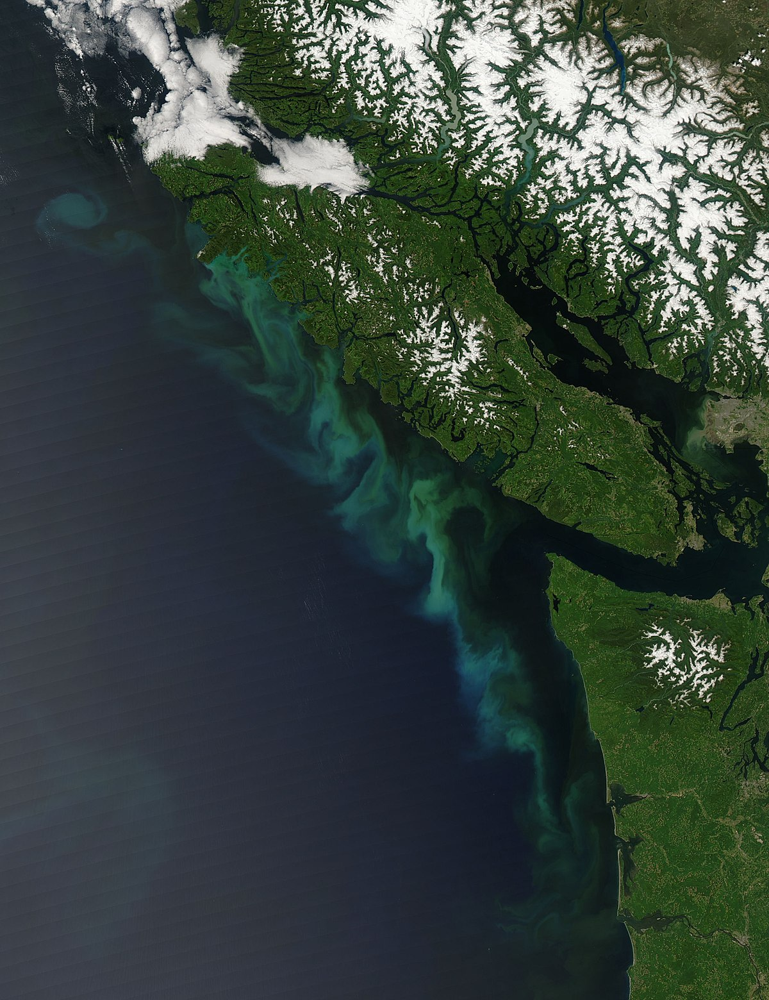
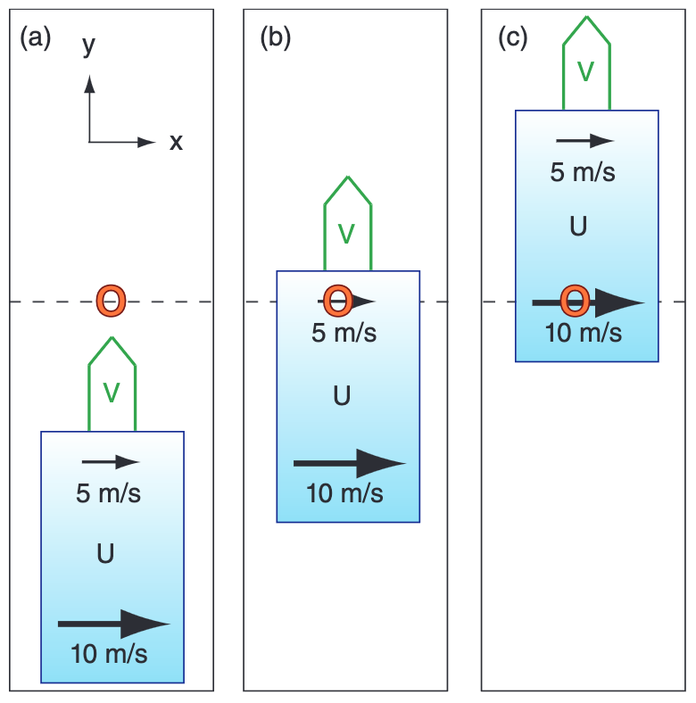
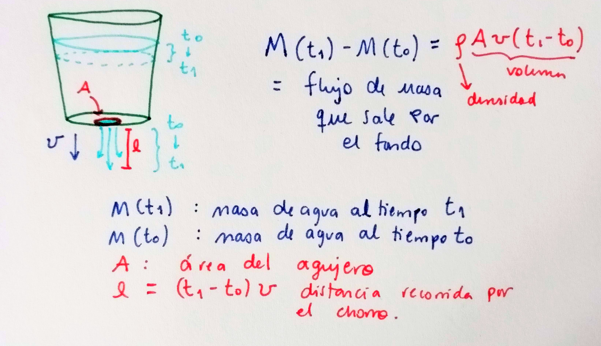

class: center, middle <br/><br/> .title[3 Descripción de un fluido] .subtitle[] <br/><br/> .author[Diplomado en Meteorología y Climatología] .institution[ICAyCC] <br/> .date[06 de marzo de 2024] <br/><br/> <img style="width:100%" src="./figures/green_waves.png"> <!-- .note[Created with [{Liminal}](https://github.com/jonathanlilly/liminal) using [{Remark.js}](http://remarkjs.com/) + [{Markdown}](https://github.com/adam-p/markdown-here/wiki/Markdown-Cheatsheet) + [{KaTeX}](https://katex.org)] --> --- name: toc class: left <img style="width:40%" src="./figures/ink.jpg"> #Contenido 1. [Consideraciones básicas](#notas) 1. [Cinemática](#cinematica) 1. [Conservación de masa](#masa) <!-- Comment out the next slide if you don't want the Table of Contents link --> --- layout: true .toc[[✧](#toc)] --- name: notas class: left # Consideraciones básicas ## ¿Qué es un fluido? Definición útil: *Un material que no puede permanecer inmóvil bajo la acción de fuerzas que actúan para deformarlo pero mantienen su volumen constante.* --- class:left ## Hipótesis del continuo Escala macroscópica >> espacio interatómico <img style="width:30%" src="./figures/faucet.jpg">  --- class:left ## Hipótesis del continuo Promediamos en escalas mucho mayores que el espacio entre átomos pero menores que la escala de interés. Esto nos permite definir un *continuo* de propiedades que varían continuamente en las escalas de interés. Por ejemplo: Podemos definir la temperatura como función de la posición y del tiempo, $T=T(\vec{x},t)$. --- class: left ## Elemento de fluido Es un pedazo o porción arbitrariamente pequeña del continuo que nos facilita entender cómo se comporta un fluido. Es una construcción conceptual, no física, en la que asumimos que: 3. su volumen es tan pequeño que sus propiedades son uniformes; 2. tiene masa constante (usualmente); 1. se mueve bajo la influencia del fluido que lo rodea. <img style="width:90%" src="./figures/fluid_element.png"> --- name: cinematica class: left ## Cinemática: ¿Cómo vamos a describir al fluido? Describir el movimiento de un objeto pequeño, como una piedra, es relativamente sencillo. Podemos seguir la trayectoria del centro de masas como una función $\vec{x}=\vec{x}(t)$ y relacionar las fuerzas que actúan sobre la piedra con la velocidad y aceleración a partir de nuestro conocimiento de $\vec{x}(t)$. La descripción de un fluido no es tan simple. El fluido está en todos lados. No nos interesa la trayectoria del centro de masas sino el movimiento del continuo, constituido por una inifindad de elementos de fluido. En general hay dos métodos útiles (que ya vieron en las primeras clases): **Descripción euleriana** **Descripción lagrangiana** --- class: center ## Analogía entre descripciones <img style="width:90%" src="./figures/euler_vs_lagrange_dibujo.png"> --- name: euler class: left ## Euleriano vs lagrangiano .left-column[* Lagrangiano: el sistema de referencia se mueve con la parcela de fluido (es decir X,Y,Z cambian en el tiempo) </br> * Euleriano: Sistema de referencia fijo (x, y, z no cambian en el tiempo)] .right-column[ .caption[Advección en dirección $y$ de viento en $x$; $O$ es una estación meteorológica fija. La caja gris es una masa de aire dentro de la cual hay un gradiente de velocidad del viento en $x$, $U$. Figura 10.4 de [Stull, 2017](https://www.eoas.ubc.ca/books/Practical_Meteorology/prmet102/Ch10-forces_winds-v102b.pdf)]] --- class: left ## Tasas de cambio Imagina que viajas de Cuernavaca al Puerto de Veracruz en bicicleta. En el camino notarás un cambio de temperatura. Esto puede ser debido a que la temperatura cambió en el tiempo (hora del día, fenómeno meteorológico, etc) o a que atravesamos un gradiente espacial de temperatura (altitud, vegetación, etc.). .center[<img style="width:60%" src="./figures/ciclista_material.png">] Veremos 3 nociones de tasa de cambio: 1. Cambio temporal local (tasa de cambio en un punto fijo), 2. tasa de cambio de un observador en movimiento y 3. tasa de cambio de un elemento de fluido dentro del flujo. --- class: left ## Tasa de cambio local Definimos la tasa de cambio de una propiedad $P$ con respecto al tiempo en un punto fijo $\vec{x}$ como: $$\textrm{Derivada temporal local} = {\frac{\partial P}{\partial t}}\Big|_{\vec{x}}$$ Regularmente omitimos el subíndice $\vec{x}$. Podemos ver esto como el cambio de $P$ conforme una serie de elementos de fluido pasan por el punto $\vec{x}$. --- class: left ## Tasa de cambio de un observador en movimiento Volvamos a la ciclista viajando a Veracruz. Digamos que se mueve a velocidad $\vec{v}=(v_1,v_2,v_3)$ distinta al fluido (aire), de manera que para ella $\vec{v}=d\vec{x}/dt$. El cambio **total** en la propiedad $P$ medido por la ciclista es: $$\frac{dP}{dt}=\frac{\partial P}{\partial t} + \frac{\partial P}{\partial x}\frac{dx}{dt} + \frac{\partial P}{\partial y}\frac{dy}{dt} + \frac{\partial P}{\partial z}\frac{dz}{dt}$$ $$\frac{dP}{dt}=\frac{\partial P}{\partial t}+\vec{v}\cdot\nabla P$$ --- class: left ## Ejemplo: Tasa de cambio de la altura sobre el piso de una niña que baja por una resbaladilla. (Pizarrón) --- class: left ## Tasa de cambio de un elemento de fluido dentro del flujo El "observador" ahora es el mismo flujo, que se mueve con la misma velocidad que el fluido, $\vec{u}$. La tasa de cambio es simplemente la tasa de cambio de la propiedad $P$ del propio elemento de fluido: $$\frac{DP}{Dt}=\frac{\partial P}{\partial t}+\vec{u}\cdot\nabla P.$$ A esta tasa de cambio se le conoce como *derivada material* o *derivada total*. --- class: left ## Ejemplo: Propiedad cuya distribución está dada por $P=P_0\cos{\omega t}\sin{kx}$, donde $\omega=2\pi/T$ es la frecuencia de la onda y $k=2\pi/\lambda_x$ es el número de onda en dirección $x$. Supongamos que el flujo es únicamente en dirección $x$ con magnitud $U$. (pizarrón) --- class: left ## Preguntas de repaso 2) En dinámica de fluidos geofísicos la rotación terrestre es importante cuando $Ro$ < 1 (en clase lo vimos como $\epsilon$). Evalúa el número de Rossby usando magnitudes características de $U$ , $\Omega$ y $L$ para los siguientes flujos para determinar si la rotación terrestre les afecta o no (Puedes considerar $\Omega$~$10^{-4}$. ): (i) Un tornado en Kansas;</br> (ii) en el remolino que se forma en una tina al vaciarla, en cualquier lugar de la Tierra;</br> (iii) en las corrientes de chorro atmosféricas cerca de Antártida a 700 Pa.</br> a) la rotación es importante únicamente en i </br> b) la rotación es importante únicamente en iii </br> c) la rotación es importante en i, ii, iii</br> d) la rotación es importante únicamente en ii y iii</br> e) la rotación es importante únicamente en ii </br> -- <span style="color:grey;font-weight:400;font-size:25px"> Respuesta: b </span> --- class: left 3) Escribe cuál es el efecto principal de la rotación y la estratificación en un fluido geofísico. -- <span style="color:grey;font-weight:400;font-size:25px"> Respuesta: El efecto principal de la rotación es desviar al flujo hacia la derecha en el hemisferio norte y a la izquierda en el Sur, mientras que la estratificación inhibe movimientos verticales y da estructura vertical al flujo. </span> --- class: left 4) La derivada material de una campo de temperatura que está dado por $T(t,x)=Ax+Bt$ donde $A$ y $B$ son constantes con unidades C/m y C/s respectivamente, en un fluido que fluye únicamente en dirección $x$, es decir su velocidad solo tiene una componente, $U$. a) DT/Dt = B+UA </br> b) DT/Dt = B </br> c) DT/Dt = A + B </br> d) DT/Dt = Ax+Bt </br> e) DT/Dt = UAx + UB </br> -- <span style="color:grey;font-weight:400;font-size:25px"> Respuesta: a </span> --- class: left 5. La frecuencia de flotación o de Brunt-Väisälä ($N^2$) es una medida de la ___________ de una columna de fluido, es proporcional a la ___________ y nos dice la frecuencia a la que oscilaría un elemento de fluido perturbado verticalmente. a) rotación, profundidad </br> b) estratificación, densidad </br> c) estratificación, profundidad </br> d) estratificación, derivada vertical de la densidad </br> e) rotación, derivada vertical de la densidad </br> -- <span style="color:grey;font-weight:400;font-size:25px"> Respuesta: d </span> --- name: masa class: left # Conservación de masa Intuitivamente: Cambio en la masa dentro de la cubeta es igual a la masa de agua que sale de la cubeta.  --- class: left Vamos a las notas (derivación consevación de masa) --- class: left # Ecuación de conservación de masa $$\frac{D\rho}{Dt}+\rho\nabla\cdot\vec{u}=0$$ El cambio local en la masa dentro de un volumen de control se compensa con la divergencia local del flujo de masa en el volumen. En un *fluido incompresible* $\rho$ es constante, por lo que $D\rho/ Dt=0$ y la ecuación de continuidad queda como: $$\nabla\cdot\vec{u}=0.$$ ¿Esto es válido en la atmósfera? --- class: left # Referencias .caption[Parte de esta presentación está basada en las notas de clase de Prof. Stephanie Waterman (UBC) y Prof. Suzanne Fielding (Durham).] </br> .caption[ Bibliografía adicional: P. K. Kundu y I. M.Cohen (2004) Fluid Mechanics, 3ra ed. Elsevier.] </br></br> .caption[Imágenes tomadas de Graham Richardson en flickr] .caption[(tinta azul), latintimes.com (Popocatépetl), learncax.com (elemento de fluido), wikicommons (afloramiento en Isla de Vancouver)] .caption[Lagrangian Drifter Lab SRIPPS (drifter), https://kinoshita.eti.br/2016/07/12/ (globo meteorológico), mayo05 getty images (anemómetro), Figura 1 en Bailey et al. (2019) Coastal Mooring Observing Networks and Their Data Products: Recommendations for the Next Decade (https://doi.org/10.3389/fmars.2019.00180) (esquemas anclajes costeros)]